Django is a web framework for building web applications in Python. It follows the Model-View-Controller (MVC) architectural pattern, where the Model represents the application’s data and logic, the View is responsible for rendering the user interface, and the Controller handles user input and coordinates communication between the Model and View.
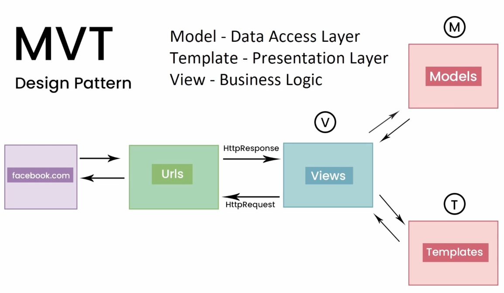
In Django, the MVT (Model-View-Template) architecture is used to structure web applications. It is similar to the more well-known Model-View-Controller (MVC) architecture, but with a few key differences. Let’s explore how the MVT pattern could be used in building Facebook using Django.
Model
The Model is responsible for handling data and the database. In Facebook, this could include models for User, Page, Photo, and Friend. The model is where we define the fields that we want to store in the database, such as the user’s name, email, and password.
View
The View is responsible for handling user requests and returning a response. In Facebook, views would handle requests such as viewing a user’s profile, creating a new post, or sending a message to a friend. Views can access the models to retrieve or update data as needed.
Template
The Template is responsible for rendering the HTML that is returned to the user. In Facebook, templates would be used to create the visual layout of the site, such as the login page, news feed, and profile page. Templates use variables passed from the views to display dynamic content, such as the user’s name or the number of likes on a post.
Using the MVT pattern, we can build a robust and scalable web application like Facebook. The model would handle data storage and retrieval, views would handle user requests, and templates would handle the visual layout of the site. With Django’s built-in tools, we can quickly build and deploy a feature-rich web application that is secure, reliable, and easy to maintain.
Django Project
In a Django project, the application logic is organized into individual apps. Each app typically consists of four main components: Models, Views, Templates, and URLs. Here’s a brief overview of these components in the context of an example Django project called “App1”:
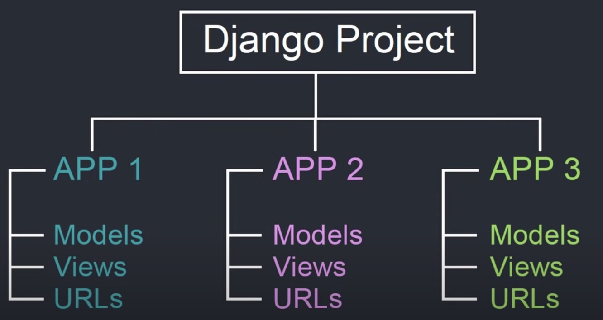
1. Models
Models define the data structure and relationships between database tables. In App1, the models might include classes such as “User” or “Post”, which represent users and posts in the application. Models are defined in a file called “models.py” in the app directory.
2. Views
Views handle user requests and return HTTP responses. In App1, the views might include functions such as “list_posts” or “create_post”, which display a list of posts or create a new post, respectively. Views are defined in a file called “views.py” in the app directory.
3. Templates
Templates define the HTML structure and layout of the application’s user interface. In App1, the templates might include files such as “list_posts.html” or “create_post.html”, which define the layout of the pages for listing posts or creating a new post, respectively. Templates are typically stored in a directory called “templates” within the app directory.
4. URLs
URLs map user requests to specific views. In App1, the URLs might include patterns such as “/posts/” or “/posts/create/”, which map to the “list_posts” and “create_post” views, respectively. URLs are defined in a file called “urls.py” in the app directory.
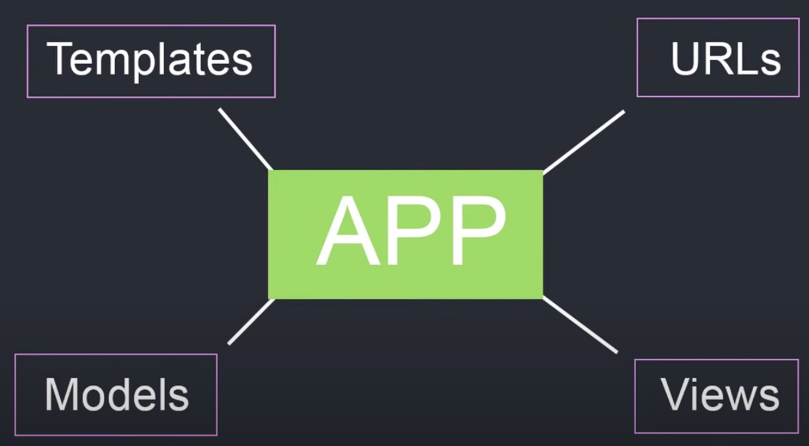
Overall, these components work together to define the functionality and user interface of the App1 web application. By organizing the application logic into separate apps, Django allows developers to build complex applications with a modular and maintainable codebase.Django Commands
Django commands are pre-defined actions or tasks that can be executed from the command line interface (CLI) in order to perform various operations related to a Django project. Django commands are used to perform tasks such as creating a new Django project, creating a new app within a project, running the development server, migrating the database, and creating a superuser for the admin interface.
Django commands are an important part of the Django framework and allow developers to perform complex tasks with ease. Django commands are created using the Django management command system, which allows developers to easily create new commands that can be executed from the command line.
To execute a Django command, we need to open a terminal or command prompt, navigate to the root directory of the Django project, and type the command followed by any required arguments or options. For example, to run the development server, we can use the command python manage.py runserver.
Most commonly used commands in Django:
| Command | Description |
|---|---|
django-admin startproject <project-name> | Create a new Django project |
python manage.py runserver | Start the development server |
python manage.py migrate | Apply database migrations |
python manage.py createsuperuser | Create a new superuser for the admin panel |
python manage.py shell | Open the Django shell |
python manage.py startapp <app-name> | Create a new app within a project |
python manage.py makemigrations | Create new database migration files |
python manage.py collectstatic | Collect all static files into a single directory |
python manage.py test | Run automated tests for the project |
python manage.py flush | Remove all data from the database |
python manage.py shell_plus | Open the Django shell with additional functionality provided by the django-extensions package |
python manage.py dumpdata | Export data from the database into a JSON or XML file |
python manage.py loaddata | Import data from a JSON or XML file into the database |
python manage.py createsuperuser --username=<username> --email=<email> | Create a new superuser with a specific username and email address |
By using Django commands, developers can speed up development and automate repetitive tasks, making it easier to build and maintain Django projects.
View function in Django
Django is a high-level Python web framework that encourages rapid development and clean, pragmatic design. It is built on top of the Python programming language and follows the model-view-controller (MVC) architectural pattern.
In this particular example, the view function is called profileView and it takes a request object as its argument. The request object contains information about the current request, such as the user’s browser, IP address, and any data they submitted in a form.
The first line of the view function imports the render function from the django.shortcuts module. The render function takes a request object, a template name, and a context dictionary as its arguments, and returns an HTTP response with the rendered template.
In the second line of the view function, the getUser() function is called to retrieve information about the current user. This function is not defined in the code snippet, but it is likely a custom function that retrieves user data from a database or other source.
Finally, the view function passes the user object to the render function as part of a context dictionary. This context dictionary allows variables to be passed from the view function to the template, where they can be displayed or manipulated as needed.
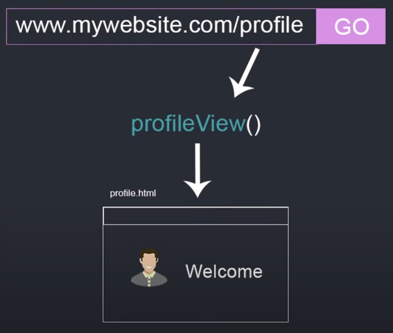
Overall, Django provides a powerful set of tools for building web applications, including a robust ORM (Object-Relational Mapping) system, a built-in admin interface, and a templating engine for creating dynamic HTML pages. The framework also emphasizes best practices such as DRY (Don’t Repeat Yourself) coding and secure development practices.Django Model
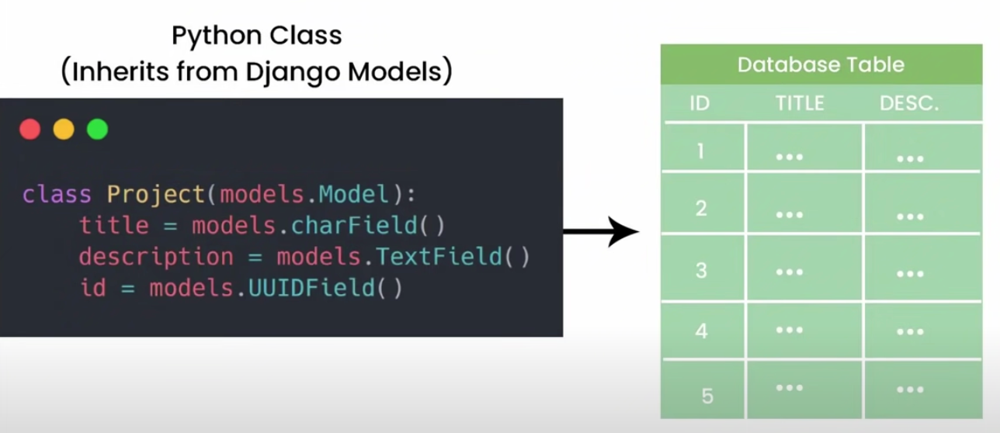
This code snippet defines a Python class that inherits from the Django models.Model class. This means that the project class will have access to all the methods and attributes of the models.Model class, as well as any additional methods and attributes defined in the project class.
The models.Model class is a core component of the Django ORM (Object-Relational Mapping) system, which provides an interface between Python code and a relational database. Each class that inherits from models.Model represents a database table, and each attribute of the class represents a column in that table.
In this particular example, the project class has three attributes: title, description, and id. These correspond to the columns in the project table in the database.
The title attribute is defined as a CharField, which means it is a string with a maximum length of 255 characters. The description attribute is defined as a TextField, which means it is a string with no length limit. Finally, the id attribute is defined as a UUIDField, which is a field that stores a universally unique identifier.
By defining these attributes in the project class, we are telling Django how to map data between the Python objects and the database table. We can then use the Django ORM to perform operations on the database, such as querying for objects, creating new objects, updating existing objects, and deleting objects.
Overall, the Django ORM and models.Model class make it easy to work with relational databases in Python, without having to write SQL queries directly. This allows developers to focus on building their application logic, rather than worrying about the details of how data is stored and retrieved from the database.
Example: One-to-many relationship
In Django, the relationship between a Project and its associated Reviews can be modeled as a one-to-many relationship using a foreign key field.
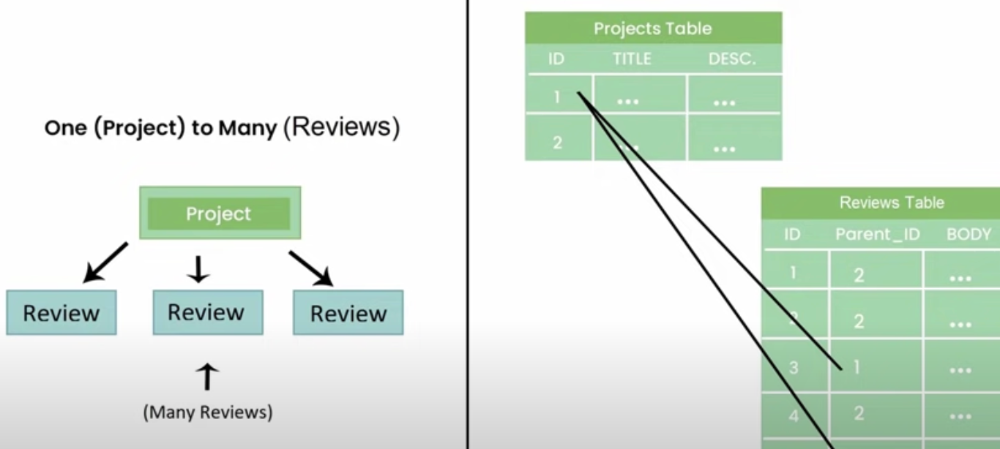
An example of how to define the Project and Review models in Django:
from django.db import models
class Project(models.Model):
title = models.CharField(max_length=255)
description = models.TextField()
class Review(models.Model):
parent_project = models.ForeignKey(Project, on_delete=models.CASCADE)
body = models.TextField()In this example, the Project model has two fields: title and description. The Review model has two fields as well: body, which is the text of the review, and parent_project, which is a foreign key field that links each review to its associated project.
The ForeignKey field is used to define a many-to-one relationship between the Review model and the Project model. By setting parent_project = models.ForeignKey(Project, on_delete=models.CASCADE), we’re telling Django that each review belongs to a single project, and that if the associated project is deleted, all of its associated reviews should also be deleted (on_delete=models.CASCADE).
With this model in place, we can perform various operations on the Project and Review objects using the Django ORM. For example, we can create a new project with associated reviews like this:
# create a new project
p = Project.objects.create(title='My Project', description='This is my project description')
# create some reviews for the project
r1 = Review.objects.create(parent_project=p, body='This project is great!')
r2 = Review.objects.create(parent_project=p, body='I really enjoyed working on this project')We can also query for all the reviews associated with a particular project:
# get all the reviews for a project
reviews = Review.objects.filter(parent_project=p)Overall, modeling a one-to-many relationship between a Project and its associated Reviews in Django is straightforward using a foreign key field. This allows us to easily perform operations on the data using the Django ORM.
Example: Many-to-many relationship
In Django, a many-to-many relationship between Tags and Products can be modeled using an intermediary table. This table contains foreign keys to both the Tags and Products tables, and represents the relationship between the two tables.
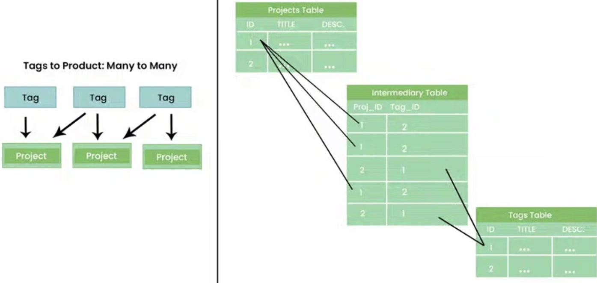
Here’s an example of how to define theProduct, Tag, and intermediary ProductTag models in Django:
from django.db import models
class Product(models.Model):
title = models.CharField(max_length=255)
description = models.TextField()
tags = models.ManyToManyField('Tag', through='ProductTag')
class Tag(models.Model):
title = models.CharField(max_length=255)
description = models.TextField()
class ProductTag(models.Model):
product = models.ForeignKey(Product, on_delete=models.CASCADE)
tag = models.ForeignKey(Tag, on_delete=models.CASCADE)In this example, the Product model has a many-to-many relationship with the Tag model, which is defined using the tags field. This field specifies that a product can have many tags, and that the relationship between Product and Tag is managed by the ProductTag model.
The ProductTag model is an intermediary model that contains foreign keys to both the Product and Tag models. This model represents the relationship between the two tables, and allows us to add additional information to the relationship, such as a timestamp or a flag indicating whether the tag is the primary tag for the product.
With this model in place, we can perform various operations on the Product, Tag, and ProductTag objects using the Django ORM. For example, we can create a new product with associated tags like this:
# create a new product
p = Product.objects.create(title='My Product', description='This is my product description')
# create some tags for the product
t1 = Tag.objects.create(title='Tag 1', description='This is tag 1')
t2 = Tag.objects.create(title='Tag 2', description='This is tag 2')
# associate the tags with the product
pt1 = ProductTag.objects.create(product=p, tag=t1)
pt2 = ProductTag.objects.create(product=p, tag=t2)We can also query for all the tags associated with a particular product:
# get all the tags for a product
tags = p.tags.all()Overall, modeling a many-to-many relationship between Tags and Products in Django is straightforward using an intermediary table. This allows us to easily perform operations on the data using the Django ORM.
Django Object-Relational Mapping
Django ORM (Object-Relational Mapping) is a tool that provides a high-level, Pythonic interface for working with relational databases. The ORM allows developers to interact with the database using Python code instead of SQL statements.
There are several methods available in the Django ORM for retrieving data from the database. Here are some of the commonly used methods:
1. get()
This method retrieves a single record from the database that matches the specified condition. For example, MyModel.objects.get(id=1) would retrieve the record from the MyModel table where the id column equals 1.
2. all()
This method retrieves all records from the specified table. For example, MyModel.objects.all() would retrieve all records from the MyModel table.
3. filter()
This method retrieves all records from the specified table that match the specified condition. For example, MyModel.objects.filter(name='John') would retrieve all records from the MyModel table where the name column equals ‘John’.
Here is an example of how these methods can be used to retrieve data from a database:
from myapp.models import MyModel
# Retrieve a single record from the database
record = MyModel.objects.get(id=1)
# Retrieve all records from the database
records = MyModel.objects.all()
# Retrieve all records from the database that match a specific condition
filtered_records = MyModel.objects.filter(name='John')In addition to these methods, there are other methods available in the Django ORM for more complex queries, such as exclude(), order_by(), annotate(), and aggregate(). The Django ORM also supports raw SQL queries if needed.
Overall, the Django ORM provides a simple and convenient way to work with relational databases in Python, allowing developers to write database queries in a more Pythonic and readable way.
CRUD (Create, Read, Update, Delete)
In Django, CRUD (Create, Read, Update, Delete) operations are performed using functions that are defined in views.py. These functions correspond to HTTP methods: GET, POST, PUT, and DELETE.
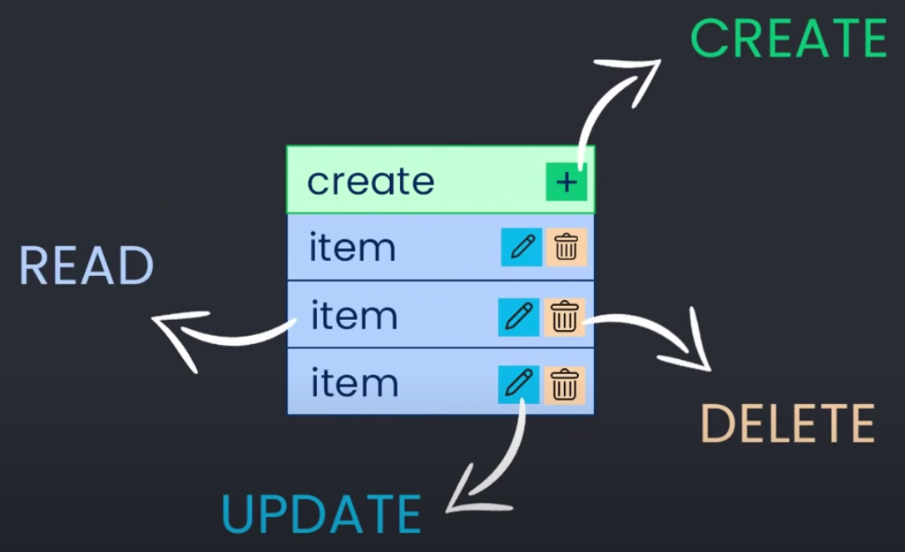
1. Create
To create a new record in the database, a view function is created that handles the HTTP POST method. The function creates a new instance of the model and saves it to the database.
from django.shortcuts import render, redirect
from .models import Book
from .forms import BookForm
def create_book(request):
if request.method == 'POST':
form = BookForm(request.POST)
if form.is_valid():
form.save()
return redirect('book_list')
else:
form = BookForm()
return render(request, 'create_book.html', {'form': form})In this example, the function
create_bookhandles the creation of a new book. It checks whether the HTTP method is POST and validates the form. If the form is valid, it saves the data to the database and redirects the user to the book list page.
2. Read
To retrieve data from the database, a view function is created that handles the HTTP GET method. The function queries the database using the model and returns the data to the user in a format that is specified in the view.
from django.shortcuts import render
from .models import Book
def book_list(request):
books = Book.objects.all()
return render(request, 'book_list.html', {'books': books})In this example, the function
book_listretrieves all books from the database using the all() method of the Book model. It passes the retrieved data to the book_list.html template to be rendered.
3. Update
To update an existing record in the database, a view function is created that handles the HTTP PUT method. The function retrieves the record from the database, updates the fields, and saves the changes back to the database.
from django.shortcuts import render, redirect
from .models import Book
from .forms import BookForm
def update_book(request, pk):
book = Book.objects.get(pk=pk)
form = BookForm(request.POST or None, instance=book)
if form.is_valid():
form.save()
return redirect('book_list')
return render(request, 'update_book.html', {'form': form})In this example, the function
update_bookretrieves the book with the specified primary key from the database and populates the form with the book data. If the form is valid, it updates the book data in the database and redirects the user to the book list page.
4. Delete
To delete a record from the database, a view function is created that handles the HTTP DELETE method. The function retrieves the record from the database and deletes it.
from django.shortcuts import render, redirect
from .models import Book
def delete_book(request, pk):
book = Book.objects.get(pk=pk)
book.delete()
return redirect('book_list')In this example, the function
delete_bookretrieves the book with the specified primary key from the database and deletes it. It then redirects the user to the book list page.
In Django, these CRUD operations can be performed using built-in functions and classes such as CreateView, DetailView, UpdateView, and DeleteView. These classes provide pre-defined templates and methods to simplify the implementation of CRUD functionality.
Overall, CRUD operations are essential in any web application, and Django provides a straightforward way to implement them using functions and classes. This makes it easier for developers to build complex web applications that allow users to perform CRUD operations on data in the database.
Django Admin Panel
The Django Admin Panel is a built-in application that provides a web-based interface for managing a Django application. It allows authorized users to view, add, edit, and delete data from the database without writing any code.
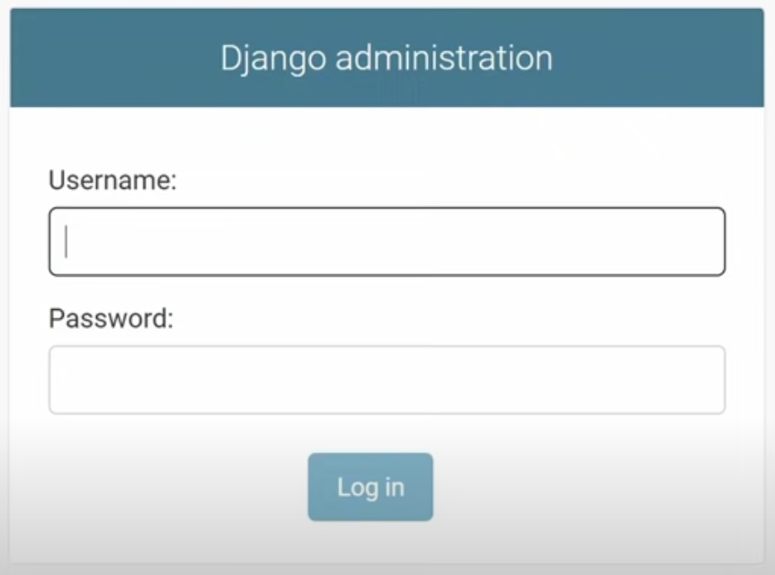
The Django Admin Panel is automatically generated based on the models defined in the application. Once the models are defined, the Admin Panel can be customized to meet specific needs by defining a ModelAdmin class.The Admin Panel consists of two main sections:
- Django Administration: This section is the built-in administrative interface for the Django framework. It provides access to the system-level administration features such as user authentication, groups, permissions, and site settings.
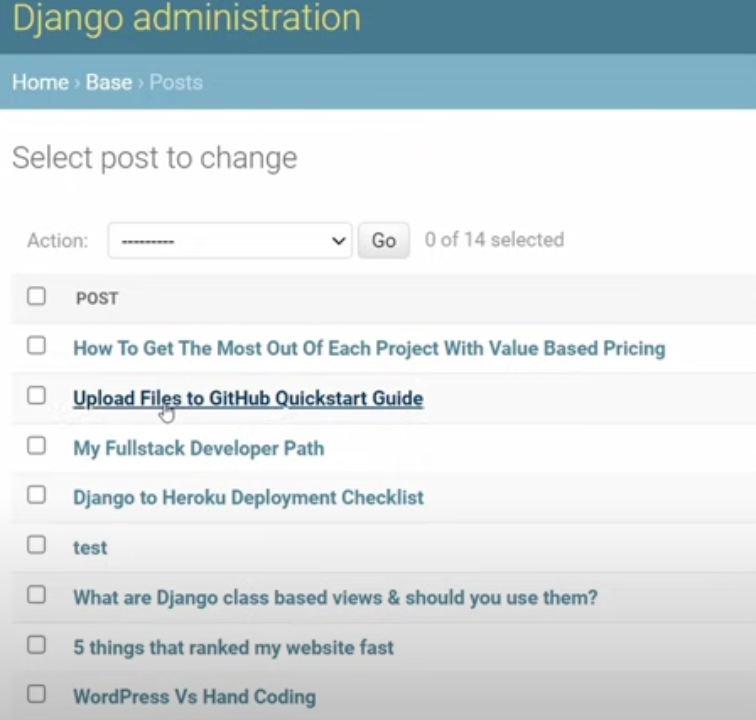
- Site Administration: This section provides access to the application-level administration features. It allows authorized users to perform CRUD (Create, Read, Update, Delete) operations on the application’s data using a web-based interface.
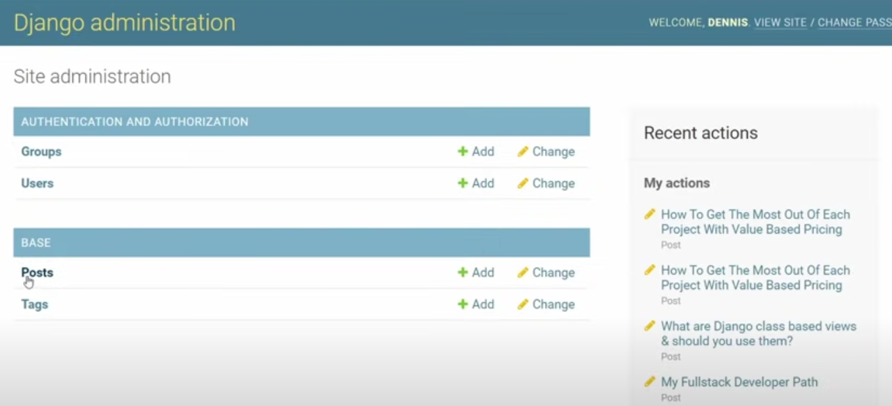
The Site Administration section is based on the ModelAdmin class, which defines how the models should be displayed in the Admin Panel. ModelAdmin class allows customization of the admin panel by providing options such as list_display, list_filter, search_fields, and actions. These options allow the developers to control which fields are displayed, how they are sorted, and how the data is filtered.
Overall, the Django Admin Panel provides a convenient way for developers and administrators to manage and maintain Django applications without writing any custom code. It is a powerful tool that streamlines the development process and helps to improve productivity.
Authentication and authorization
Authentication and authorization are essential components of web applications that deal with user accounts and access control. Django provides built-in support for authentication and authorization, making it easy to add user authentication and authorization to your web application.
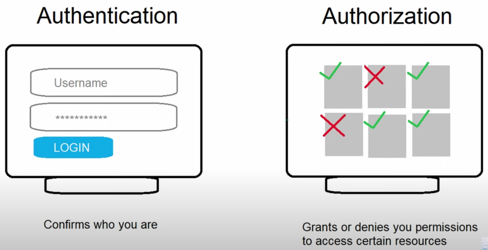
1. Authentication
Authentication refers to the process of verifying the identity of a user who is trying to access a web application. In Django, authentication is handled by the django.contrib.auth module, which provides a set of views and forms for user authentication. The User model is also provided by this module, which represents a user account in your application.
2. Authorization
Authorization refers to the process of determining what actions a user is allowed to perform in a web application. In Django, authorization is handled by the built-in permissions system, which allows you to define permissions for different types of users in your application. You can define permissions for specific models and actions, such as creating, reading, updating, and deleting records.
To use authentication and authorization in your Django application, you need to add the django.contrib.auth and django.contrib.contenttypes apps to your INSTALLED_APPS setting in settings.py. You can then create views and templates for user authentication, and use the @login_required decorator to require authentication for certain views.
Here is an example of using the @login_required decorator to require authentication for a view:
from django.contrib.auth.decorators import login_required
from django.shortcuts import render
@login_required
def profile(request):
# Render the profile template
return render(request, 'profile.html')In addition to authentication and authorization, Django also provides support for other security features, such as password hashing, cross-site request forgery (CSRF) protection, and HTTPS encryption.
Static files
In Django, static files are used to serve files that do not change during the lifetime of a web application. Examples of static files include stylesheets, JavaScript files, and images. These files are served directly from the web server, without being processed by Django.
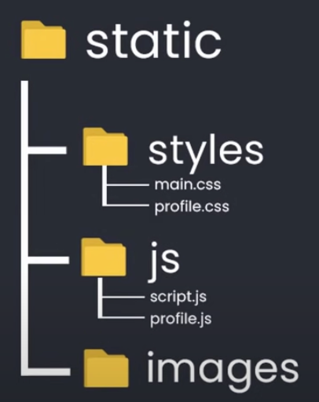

To serve static files in Django, you need to create a static directory in your application. Inside this directory, you can create subdirectories to organize your static files, such as styles for CSS files, js for JavaScript files, and images for image files.
Here is an example directory structure for static files in a Django project:
myproject/
|-- myproject/
| |-- settings.py
| |-- urls.py
| |-- wsgi.py
|-- myapp/
| |-- templates/
| |-- static/
| |-- styles/
| |-- main.css
| |-- profile.css
| |-- js/
| |-- script.js
| |-- profile.js
| |-- images/
| |-- logo.png
|-- manage.py
To use static files in your templates, you need to add the {% load static %} template tag at the top of your template. You can then reference your static files using the {% static %} template tag, like this:
{% load static %}
<link rel="stylesheet" type="text/css" href="{% static 'styles/main.css' %}">
<script src="{% static 'js/script.js' %}"></script>
<img src="{% static 'images/logo.png' %}" alt="Logo">In addition to serving static files during development, you also need to configure your web server to serve static files in production. Django provides a collectstatic management command that collects all static files from your project and copies them to a single directory that can be served by your web server.
Create website using Django
Creating a website like Facebook.com using Django would be a complex and challenging task that would require a team of experienced developers and a significant amount of time and resources. However, here’s a brief overview of the key steps involved in building some of Facebook.com’s core features using Django:
1. Users
- Pages: To allow users to create pages on the website, the developer would need to define a “Page” model in Django’s ORM (Object-Relational Mapping) system. This model would store information about the page, such as its name, description, and category. The developer would also need to create views and templates to allow users to create, edit, and view pages on the site.
- Photos: To allow users to upload and view photos, the developer would need to create a “Photo” model in Django’s ORM system. This model would store information about the photo, such as its title, caption, and image file. The developer would also need to create views and templates to allow users to upload and view photos on the site.
- Friends: To allow users to connect with each other and become friends on the site, the developer would need to create a “Friendship” model in Django’s ORM system. This model would store information about the friendship, such as the two users involved and the date the friendship was formed. The developer would also need to create views and templates to allow users to send friend requests, accept friend requests, and view their list of friends.
2. Feed
- Likes: To allow users to like posts and photos in their feed, the developer would need to create a “Like” model in Django’s ORM system. This model would store information about the like, such as the user who liked the post, the post they liked, and the date the like was made. The developer would also need to create views and templates to allow users to like and unlike posts and photos.
- Comments: To allow users to comment on posts and photos in their feed, the developer would need to create a “Comment” model in Django’s ORM system. This model would store information about the comment, such as the user who made the comment, the post or photo they commented on, and the text of the comment. The developer would also need to create views and templates to allow users to create and view comments on posts and photos.
3. Groups
- Members: To allow users to create and join groups on the site, the developer would need to create a “Group” model in Django’s ORM system. This model would store information about the group, such as its name, description, and category. The developer would also need to create views and templates to allow users to create, edit, and view groups on the site, as well as a “Membership” model to track which users are members of each group.
- Messages: To allow users to send messages to each other within groups, the developer would need to create a “Message” model in Django’s ORM system. This model would store information about the message, such as the user who sent the message, the group the message was sent to, and the text of the message. The developer would also need to create views and templates to allow users to send and view messages within groups.

Overall, building a website like Facebook.com using Django would require a combination of technical skills, design expertise, and project management experience. It would also require a deep understanding of the site’s core features and functionality, as well as the ability to adapt to changing user needs and trends.
Key features
Django is a high-level, open-source web framework for Python that follows the Model-View-Controller (MVC) architectural pattern. It is designed to make web development faster, easier, and more secure by providing developers with a set of tools and features to build complex web applications.
1. Object-Relational Mapping (ORM)
Django provides an ORM that allows developers to interact with the database using Python objects instead of SQL statements. This makes it easier to work with databases and reduces the risk of SQL injection attacks.
2. Admin Interface
Django provides a built-in admin interface that allows developers to manage the data in the application without writing any code. It includes features such as CRUD operations, search, filtering, and sorting.
3. URL Routing
Django provides a URL routing system that allows developers to map URLs to views. This makes it easier to create SEO-friendly URLs and handle complex URL patterns.
4. Templating Engine
Django provides a built-in templating engine that allows developers to create dynamic web pages by separating the presentation logic from the business logic.
5. Security
Django provides built-in security features such as cross-site scripting (XSS) protection, cross-site request forgery (CSRF) protection, and password hashing.
6. Scalability
Django is designed to be scalable and can handle high traffic websites. It provides caching and session management features to improve performance.
7. Third-party Libraries
Django has a large and active community of developers who have created a wide range of third-party libraries and packages that extend its functionality.
Overall, Django is a powerful and flexible web framework that can be used to build a wide range of web applications, from simple websites to complex enterprise applications. Its ease of use, security features, and scalability make it a popular choice for web developers.
Popular websites built using Django

| Website | Description |
|---|---|
| Social media platform. Instagram’s backend is built with Django, and it is one of the most popular social media platforms in the world. | |
| Visual discovery platform that uses Django for its backend. | |
| Mozilla | Non-profit organization for Firefox web browser, uses Django for some of its web applications. |
| Dropbox | Cloud storage and file sharing service, uses Django for some of its internal web applications. |
| Bitbucket | Web-based version control repository hosting service that uses Django for its backend. |
| Spotify | Music streaming service, uses Django for some of its internal web applications. |
| Eventbrite | Event organizing and management platform |
| The Washington Post | One of the largest newspapers in the US, uses Django for some of its web applications. |
| NASA | US space agency, , uses Django for some of its web applications. |
| Disqus | Commenting platform for websites that uses Django for its backend. |
This is just a small sample of the many websites that are built using Django.